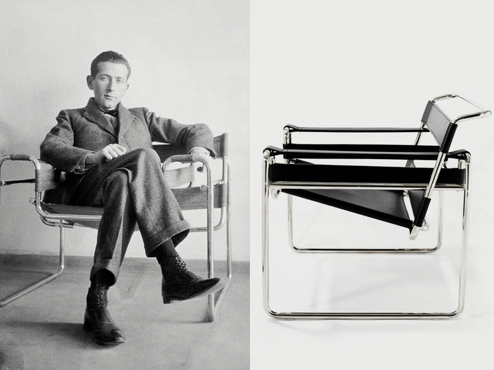

Descripción
La Wassily es una silla de club reducida a lo esencial: una estructura de tubos de acero doblados y franjas de cuero o tela que forman el asiento, el respaldo y los apoyabrazos.
Fue una de las primeras sillas del mundo hechas con tubo de acero curvado.
Materiales
- Estructura de tubo de acero cromado.
- Asiento, respaldo y apoyabrazos de cuero o tela.
Datos
- Diseñador
- Marcel Breuer
- Año
- 1925
- Movimiento
- Bauhaus
- Producción actual
- Knoll
Contexto
Breuer la diseñó en la Bauhaus, la escuela de diseño alemana, y se dice que se inspiró en el manubrio de una bicicleta. Su nombre viene de Wassily Kandinsky, colega de Breuer en la escuela, que tenía una en su casa.